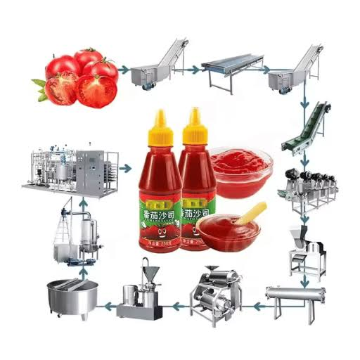

Manual vs Automated Tomato Processing Line: Which Production System Delivers Better ROI?

Summary
This article compares manual and fully automated tomato processing lines in terms of cost, efficiency, labor requirement, food safety, production stability, and long-term ROI.
It is designed for food factory owners and investors evaluating whether to upgrade to an automated production system or continue with traditional manual processing.
Technology
- Industrial food processing system
- Manual food processing production system
- Automated tomato washing and sorting system
- Continuous pulping and evaporation system
- Aseptic filling and sealing automation
- PLC / SCADA industrial control system
- MES smart production management system
- Robotic packaging and palletizing system
- IoT production monitoring system
- ASRS automated warehouse integration system
- AI-based quality inspection system
Challenge
Traditional manual tomato processing factories face serious limitations:
High labor dependency across all production stages
Inconsistent product quality and hygiene risks
Limited production capacity and scalability
High operational cost and labor fluctuation
Inefficient sterilization and process control
Low automation in packaging and logistics
Poor traceability and production data visibility
These issues reduce competitiveness in modern food manufacturing markets.
Solution
Automated tomato processing systems solve these challenges by:
Fully continuous end-to-end production workflow
Automated washing, pulping, and sterilization
Aseptic filling and controlled packaging system
Centralized PLC + MES production control
Real-time IoT monitoring of production data
Robotic packaging and palletizing systems
ASRS warehouse integration for logistics automation
AI-based quality inspection and optimization
This creates a highly efficient and scalable production system.
Workflow & Layout
Manual System Workflow:
1.Manual washing and sorting
2.Manual crushing and pulping
3.Manual cooking and concentration
4.Manual filling and sealing
5.Manual labeling and packaging
6.Manual palletizing and storage
Automated System Workflow:
1.Automated washing and sorting system
2.Continuous pulping and separation
3.Vacuum evaporation system
4.Sterilization and aseptic filling
5.Automated labeling and inspection
6.Robotic palletizing system
7.ASRS warehouse storage system

Results & ROI
- Production efficiency increased by 40–120%
- Labor cost reduced by 50–80%
- Food safety compliance significantly improved
- Product consistency greatly enhanced
- Downtime reduced with predictive maintenance
- Packaging speed and accuracy improved
- Warehouse logistics fully automated
- ROI typically achieved within 18–30 months
Equipment List
- Tomato washing and sorting system
- Crushing and pulping equipment
- Vacuum evaporation system
- Sterilization (retort) system
- Aseptic filling machine
- Automatic sealing and labeling line
- Packaging and cartoning system
- Robotic palletizing system
- PLC / SCADA control system
- ASRS automated warehouse system
Project Overview / Opening
The choice between manual and automated tomato processing systems directly determines a factory’s long-term profitability and scalability.
Automation is no longer just an upgrade—it is a structural shift in food manufacturing competitiveness.
Key Points
- Automation significantly improves production efficiency
- Manual systems have higher long-term labor cost
- Food safety is stronger in automated systems
- Automation improves consistency and traceability
- Scalability is limited in manual production
- Data-driven factories outperform traditional systems
- ROI favors automation in mid-to-large scale factories
Implementation / Workflow
Implementation of automation upgrade includes:
Factory assessment and production audit
Bottleneck identification in manual workflow
Automation system design planning
Equipment selection and integration
PLC/MES system deployment
Packaging and logistics automation setup
ASRS warehouse integration (optional)
System testing and full commissioning
Customer Value / Results
This comparison helps decision-makers achieve:
Clear investment decision between manual vs automation
Reduced long-term operational risk
Higher production efficiency and scalability
Lower labor dependency and cost structure
Improved food safety compliance
Better factory modernization planning
Stronger ROI visibility before investment
Competitive advantage in global food markets
Conclusion / Next Step
Manual production systems are reaching their limits in modern food manufacturing. Automation provides a clear path to higher efficiency, lower cost, and scalable production.
If you are evaluating a food factory upgrade, we can support you with:
ROI comparison and feasibility analysis
Full automation system design
Production line upgrade planning
Packaging and ASRS integration
Turnkey project execution support
SEO Title
Manual vs Automated Tomato Processing Line: Which Production System Delivers Better ROI?
SEO Description
This article compares manual and fully automated tomato processing lines in terms of cost, efficiency, labor requirement, food safety, production stability, and long-term ROI.
It is designed for food factory owners and investors evaluating whether to upgrade to an automated production system or continue with traditional manual processing.
Related Blog
Start with Your Business Challenge
Tell us about your warehouse, factory, or production requirements. We'll help you explore practical automation solutions and relevant project references.